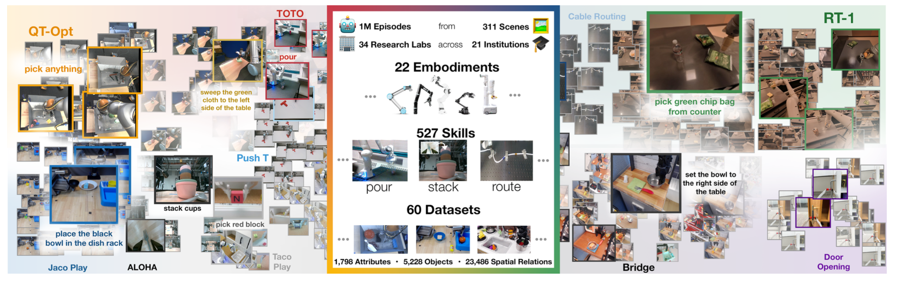
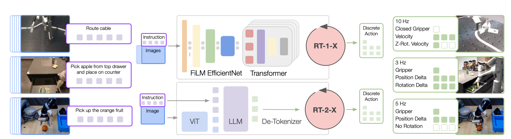
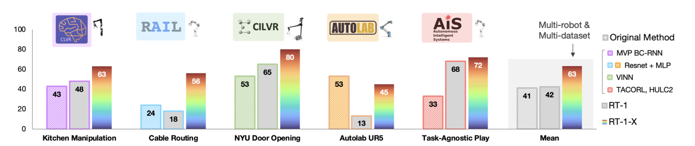
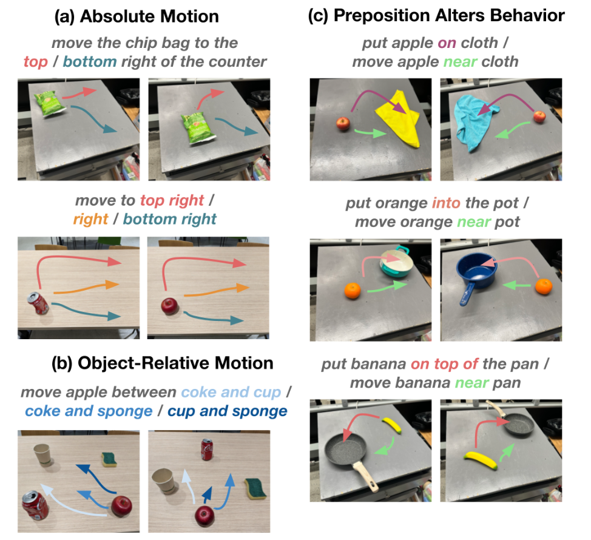

Open X-Embodiment: Robotic Learning Datasets and RT-X Models
Abstract
Large, high-capacity models trained on diverse datasets have shown remarkable successes on efficiently tackling downstream applications. In domains from NLP to Computer Vision, this has led to a consolidation of pretrained models, with general pretrained backbones serving as a starting point for many applications. Can such a consolidation happen in robotics? Conventionally, robotic learning methods train a separate model for every application, every robot, and even every environment. Can we instead train “generalist” X-robot policy that can be adapted efficiently to new robots, tasks, and environments? In this paper, we provide datasets in standardized data formats and models to make it possible to explore this possibility in the context of robotic manipulation, alongside experimental results that provide an example of effective X-robot policies. We assemble a dataset from 22 different robots collected through a collaboration between 21 institutions, demonstrating 527 skills (160266 tasks). We show that a high-capacity model trained on this data, which we call RT-X, exhibits positive transfer and improves the capabilities of multiple robots by leveraging experience from other platforms.
move red pepper to tray
pick ice cream
move red pepper to A
Data Approach Overview
We propose an open, large-scale dataset for robot learning curated from 21 institutions across the globe. The dataset represents diverse behaviors, robot embodiments and environments, and enables learning generalized robotic policies.
Algorithm Approach Overview
We train two models on the robotics data mixture: (1) RT-1, an efficient Transformer-based architecture designed for robotic control, and (2) RT-2, a large vision-language model co-fine-tuned to output robot actions as natural language tokens.
Both models output robot actions represented with respect to the robot gripper frame. The robot action is a 7-dimensional vector consisting of x, y, z, roll, pitch, yaw, and gripper opening or the rates of these quantities. For data sets where some of these dimensions are not exercised by the robot, during data collection, we set the value of the corresponding dimensions to zero.
We refer to the RT-1 model trained using the robotic data mixture as RT-1-X, and the RT-2 model trained using the robotic data mixture as RT-2-X.
Results
RT-1-X evaluation on in-distribution skills
The RT-1-X models outperforms RT-1 or the Original Method trained on individual datasets by 50% in the small-data domain. Original Method refers to the model developed by the creators of the dataset trained only on that respective dataset. The Original Method constitutes a reasonable baseline insofar as it can be expected that the model has been optimized to work well with the associated data. The lab logos indicate the physical location of real robot evaluation, and the robot pictures indicate the embodiment used for the evaluation.
At UC Berkeley
At University of Freiburg
At NYU
At UC Berkeley
At Stanford
At NYU
RT-2-X evaluation on emergent skills
The RT-2-X model outperforms RT-2 by 3x in emergent skill evaluation and demonstrates skills that the RT-2 model was not capable of previously, including better spatial understanding in both the absolute and relative sense. Small changes in preposition in the task string can also modulate low-level robot behavior. The skills used for evaluation are illustrated in the figure above. The RT-2-X model outperforms RT-2 by 3x in emergent skill evaluation and demonstrates skills that the RT-2 model was not capable of previously.
Acknowledgements
The website template was borrowed from Jon Barron.